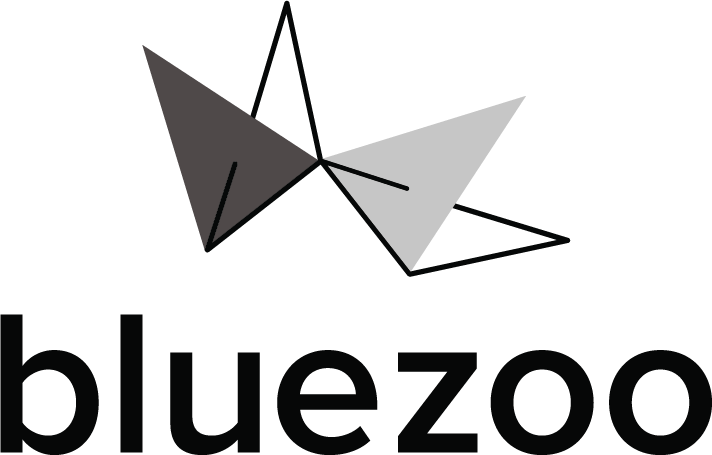
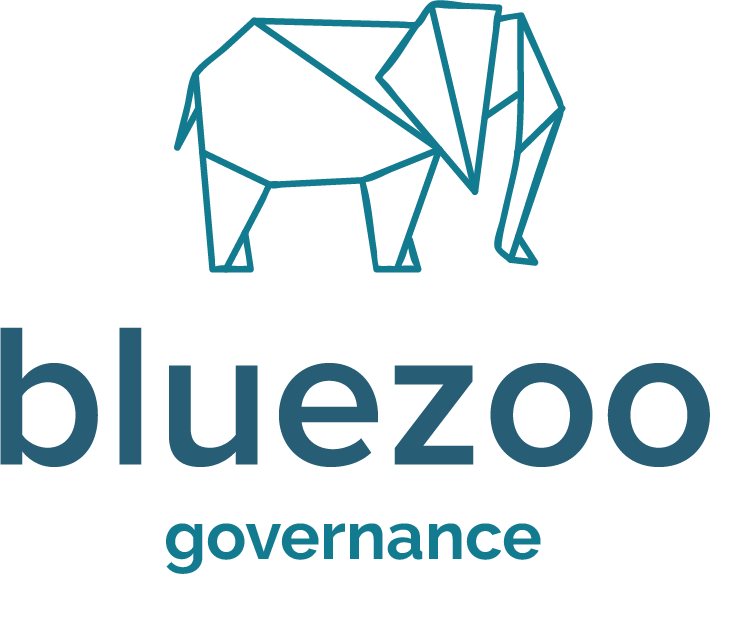
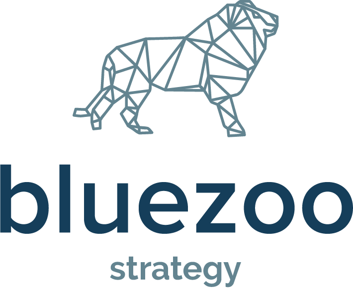
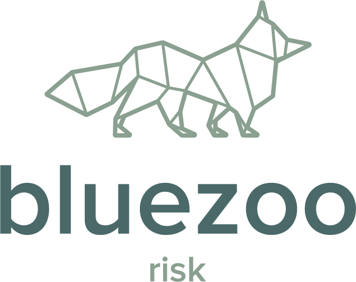
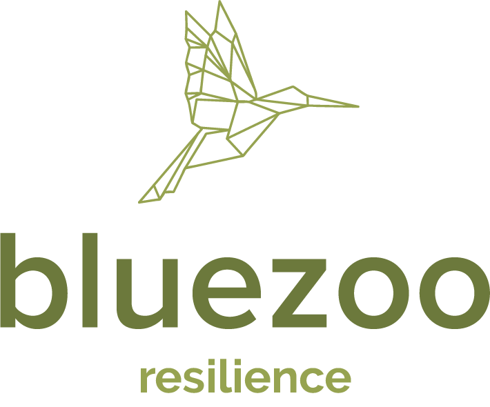

Elephant · teal #137B8F — memory, weight, doing it properly.

Lion · navy #153E5A — direction, confidence, leading.

Fox · slate #4B6969 — cunning, foresight, reading the terrain.

Hummingbird · olive #6C793C — agility, recovery, endurance.
Body — Calm, senior, plain-spoken. We write like a trusted advisor in the room, not a vendor pitching. Short declarative sentences, Australian spelling, sentence case for headings and buttons.
"Quotes are set in italic."
Ø 15 mm die-struck hard-enamel pin.
Ø 16 mm die-struck hard-enamel pair.
Navy full-zip with embroidered chest mark.
Navy pique with all-white mark & rear line.
Foil name, blind-deboss butterfly, front & back.
600 gsm, foil & deboss production spec.
Trim, bleed, registration & colour bars.